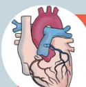

RECOMMANDATIONS DE PRATIQUES PROFESSIONNELLES
de la SOCIETE FRANÇAISE D'ANESTHESIE ET REANIMATION (SFAR)
en association avec la SOCIETE FRANÇAISE DE CARDIOLOGIE (SFC)
la SOCIETE FRANÇAISE DE PEDIATRIE (SFP)
le CLUB ANESTHESIE-REANIMATION EN OBSTETRIQUE (CARO)
et la SOCIETE FRANÇAISE DE CHIRURGIE THORACIQUE ET CARDIO-VASCULAIRE (SFCTCV)
Guidelines for anaesthesia of adults with congenital heart disease in non-cardiac surgery
2023


ANNEXES : FICHES PRATIQUES DE PRISE EN CHARGE
Experts : Diane ZLOTNIK, Pascal AMEDRO
| Gestion péri opératoire [1,2,3] | Conduite à tenir | ||
|---|---|---|---|
| Traitement de l'insuffisance cardiaque | La veille de l'intervention | Le matin de l'intervention | |
| Diurétiques | Poursuite | Arrêt | Contrôle de la kaliémie souhaitable Optimisation de la volémie périopératoire |
| IEC | Poursuite | Arrêt | Poursuite en cas d'insuffisance cardiaque et/ou FE ventricule systémique < 40% |
| Bétabloquants | Poursuite | Poursuite | En l'absence d'urgence, discuter l'arrêt du traitement par le cardiologue congénitaliste référent. |
| Inhibiteurs SRAA | Poursuite | Arrêt | Arrêt ≥ 12h (Traitement de l'HTA) Poursuite en cas d'insuffisance cardiaque et/ou FE ventricule systémique < 40% |
| Anti-arythmiques : - Classe I (Flécaine...) - Classe II, III (Cordarone) |
Arrêt Poursuite |
Arrêt Poursuite |
|
| Digoxine | Aucune recommandation | Aucune recommandation | En l'absence d'urgence, discuter l'arrêt du traitement par le cardiologue congénitaliste référent. |
| Traitement antihypertenseur pulmonaire | |||
| Sildenafil | Poursuite | Poursuite | |
| Bosentan | |||
| Prostacycline | |||
| Traitement anticoagulant [3,4,5] | |||
| AOD : - Rivaroxaban - Apixaban - Edoxaban - Dabigatran |
Voir recommandations GIHP | En l'absence d'urgence, discuter l'arrêt du traitement par le cardiologue congénitaliste référent. | |
| AVK | Interrompre 5 jours avant une chirurgie à risque hémorragique élevé** Relais HBPM ou HNF selon la pathologie catégorie de risque |
En absence d'urgence discuter du relais AVK voir de l'arrêt avec le cardiologue congénitaliste référent (en particulier en prévention primaire chez les ventricules uniques) | |
| Agents antiagrégants plaquettaires [6] | |||
| Aspirine | Dernière prise J-3 | Avis d'expert, arrêt sauf en cas de shunt systémico-pulmonaire (blackout-taussig shunt, stent du canal artériel). | |
| Clopidogrel | Dernière prise J-5 | ||
| Ticagrelor | Dernière prise J-5 | ||
| Prasugrel | Dernière prise J-7 | En absence d'urgence discuter avec le cardiologue congénitaliste référent d'un relais par HBPM ou HNF en post-opératoire. | |
[1] RFE SFAR Gestion périopératoire des traitements chroniques et dispositifs médicaux 2009
[2] Baumgartner H, De Backer J, Babu-Narayan SV, Budts W, Chessa M, Diller GP et al ESC Scientific Document Group. 2020 ESC Guidelines for the management of adult congenital heart disease. Eur Heart J. 2021;42(6):563-645. doi:10.1093/eurheartj/ehaa554.
[3] Gestion des Anticoagulants Oraux Directs pour la chirurgie et les actes invasifs programmés : propositions réactualisées du Groupe d'Intérêt en Hémostase Périopératoire (GIHP)-Septembre 2015
[4] Prise en charge des surdosages en antivitamines K, des situations à risque hémorragique et des accidents hémorragiques chez les patients traités par antivitamines K en ville et en milieu hospitalier GEHT - HAS (service des bonnes pratiques professionnelles) / Avril 2008
[5] Recommendations of good practice for the management of thromboembolic venous disease in adults. Sanchez O, Benhamou Y, Bertoletti L, Constant J, Couturaud F, Delluc A et al. Rev Mal Respir. 2019 Feb;36(2):249-283. doi: 10.1016/j.jmr.2019.01.003.
[6] Godier A, et al. Gestion des agents antiplaquettaires pour une procédure invasive programmée. Propositions du Groupe d'intérêt en hémostase périopératoire (GIHP) et du Groupe français d'études sur l'hémostase et la thrombose (GFHT). Anesth Reanim. 2018
Experts : Catherine KOFFEL, Loïc MACE, Xavier ALACOQUE, Elise LANGOUIET
Pièges et spécificités du monitoring des patients adultes porteurs de cardiopathies congénitales |
Abord vasculaireAntécédents chirurgicaux (ligature, section, séquelle vasculaire après dénudation artérielle...) Thrombose Variation anatomique Échocardiographie détaillée Comptes rendus opératoires Échographie doppler des axes vasculaires systématique Cathéterisation toujours écho guidée, opérateur entraîné, axes distaux prioritairement, sans modification du traitement anticoagulant. |
Monitoring de la pression artérielleAsymétrie tensionnelle membres inférieurs membres supérieurs Si antécédents de chirurgie de coarctation de l'aorte avec un gradient résiduel: La pression au membre supérieur surstime la pression dans l'aorte descendante. Asymétrie tensionnelle entre les deux membres supérieurs Ligature/sténose artérielle ou antécèdent de shunt de blalock taussig Monitoring de la pression artérielle sur le membre contralatéral |
Monitoring PVCRisque thromboembolique si shunt intracardiaque droite-gauche Purge soigneuse des tubulures Dérivation cavopulmonaire partielle ou totale (Fontan) PVC = PAP |
RPP SFARAnesthésie pour patients adultes porteurs d'une cardiopathie congénitale en chirurgie non cardiaque. |
Monitoring SpO2Ligature artérielle ou ATCD de shunt type Blalock-Taussig Changement de site de monitoring si courbe amortie sténose résiduelle fiabilité si cardiopathie avec hypoxémie profonde Gazométrie artérielle |
Monitoring EtCO2sous-estimation de la PaCO2 par l'EtCO2 si shunt droite gauche aspect restrictif si ATCD de thoracotomie multiples, lésion nerf phrénique Gazométrie artérielle |
Monitoring débit cardiaqueSwan Ganz Interprétation difficile si shunt intracardiaque ou insuffisance tricuspidé Thermodilution (PiCCO) Calibration et interprétation difficile si shunt intracardiaque ou insuffisance tricuspidé Doppler transoesophagien Non validé dans les cardiopathies congénitales Difficile interprétation dans les cardiopathies complexes, varices œsophagiennes chez FONTAN |
Experts : Bernard CHOLLEY, Nadir TAFER
Diminuer le shunt, en baissant les RVP et en augmentant les RVS.
Éviter une anesthésie trop profonde (sympatholyse : vasoplégie). Vasopresseurs : recourir à la noradrénaline IVSE pour corriger une éventuelle vasoplégie, plutôt qu'à des injections en bolus dont l'effet est plus brutal.
Ne pas aggraver le shunt, en évitant de baisser les RVP et en évitant d'augmenter les RVS.
L'évaluation du VD systémique est difficile, il faut le considérer à potentiel de défaillance élevé notamment en présence d'une insuffisance tricuspidale et d'arythmie.
il faut éviter :
il faut éviter ;
Dans tous les cas : La tolérance aux apports liquidiens comme au défaut de remplissage est réduite, il faut donc obligatoirement se doter d'un monitoring du VES, réaliser une épreuve de maximisation du VES et titrer le remplissage par petites fractions (100 mL).
En l'absence d'un VD, dans une circulation Fontan, le débit cardiaque dépend du gradient moteur du retour veineux pulmonaire entre la pression veineuse systémique moyenne et la pression d'aval, qui n'est plus la pression de l'oreillette droite mais la pression de l'artère pulmonaire. La prise en charge anesthésique vise à optimiser le débit pulmonaire qui est passif et surtout à limiter les facteurs qui pourraient contribuer à réduire le gradient et donc le débit cardiaque :

Les patients porteurs d'anomalies coronaires congénitales réparées (à risque de sténose ostiale) méritent les mêmes précautions de prise en charge péri-opératoire que les patients coronariens non congénitaux.
RPP SFAR : Anesthésie pour patients adultes porteurs d'une cardiopathie congénitale en chirurgie non cardiaque.
FICHE PRATIQUE #4 : Protocole pour l'anesthésie en urgence d'un patient porteur d'une HTAP iso- ou supra-systémique
Experts : Bernard CHOLLEY, Élise LANGOUE, Nadir TAFER
proposition votée par les experts
Le syndrome d'Eisenmenger est une HTAP fixée par remodelage vasculaire pulmonaire réactionnel à un hyperdébit pulmonaire prolongé. On le retrouve dans des cas de cardiopathies congénitales avec shunt gauche-droite non réparé. Ce syndrome se traduit cliniquement par une cyanose par inversion du shunt qui devient droit-gauche lorsque la pression dans l'OD devient supérieure à la pression dans l'OG (shunt à l'étage auriculaire) ou lorsque la PAP devient supra-systémique (shunt à l'étage ventriculaire). L'anesthésie entraîne une baisse de la résistance artérielle systémique et potentiellement une baisse de la pression artérielle. Le VD qui fait face à une post-charge augmentée ne peut pas tolérer une baisse de son débit coronaire qui dépend de la pression aortique. Toute baisse de pression artérielle systémique lors de l'induction d'anesthésie s'accompagnera donc d'une baisse de débit coronaire et d'un risque de défaillance ischémique aiguë du VD. Toute hypoxémie et hypercapnie majorera la vasoconstriction artérielle pulmonaire et aggraverait l'HTAP.
Purge soigneuse les lignes de perfusion: risque d'embolies systémiques paradoxales
RPP SFAR Anesthésie pour patients adultes porteurs d'une cardiopathie congénitale en chirurgie non cardiaque.
FICHE PRATIQUE #5 : Protocole pour l'anesthésie en urgence d'un patient porteur d'une dérivation cavo-pulmonaire (Fontan)
Experts : Bernard CHOLLEY, Elise LANGOUE, Nadir TAFER
Proposition votée par les experts
La circulation de Fontan est un montage chirurgical palliatif dans le cadre d'un ensemble de cardiopathies dites à ventricule unique. Dans ce montage, le ventricule sous-pulmonaire est absent, Le retour veineux systémique se fait passivement selon le gradient entre la pression veineuse systémique en amont, et l'artère pulmonaire en aval. Toute élévation de la pression intra-thoracique et toute vasoconstriction artérielle pulmonaire vont augmenter la pression d'aval et donc réduire le débit de retour veineux et le débit cardiaque.
RPP SFAR Anesthésie pour patients adultes porteurs d'une cardiopathie congénitale en chirurgie non cardiaque.
Experts : Estelle MORAU, Marie BRUYERE, Magali LADOUCEUR
La diminution des RVS augmente le shunt droit-gauche et le risque de cyanose
Dans les cardiopathies cyanogènes avec obstacle pulmonaire non réparées l'augmentation du volume sanguin circulant est bénéfique pour augmenter la précharge droite et le flux de sang pulmonaire.
Le statut hypercoagulable expose au risque de thrombose dans les artères pulmonaires
Les cardiopathies cyanotiques sont probablement associées à des anomalies de l'hémostase primaire
Risque infectieux (embole septique/endocardite)
Maintenir les RVS :
Monitoring invasif de la pression artérielle (cathéter artériel)
Traiter les épisodes de cyanose avec une amine vasopressive (noradrénaline) particulièrement si associé à hypotension
ALR titrée pour AVB ou césarienne, surveillance de la levée du bloc (et signes neurologiques)
Titration de l'ocytocine, éviter les PGF2 (carboprost)
Attention au risque d'embolie paradoxale :
Mettre des filtres sur les voies veineuses
Utiliser la technique de mandrin liquide pour ALR
Discuter une anticoagulation préventive en post-partum
Maintenir le retour veineux :
Décubitus latéral gauche
détection et traitement rapide de l'HPP
Abaisser les RVP :
Administration d'O2, éviter la sédation, l'hypoventilation et l'hypercapnie
Traitement large des infections gynécologiques :
Prévention de l'endocardite infectieuse si rupture prématurée des membranes (Les doses recommandées sont : Amoxicilline 2 g IV dose de charge puis Amoxicilline 1 g IV/PO toutes les 6h ESC 2015)
La diminution des RVS diminue le shunt gauche droit
L'augmentation de volume sanguin peut décompenser la patiente déjà en hypervolémie
Ne pas baisser les RVP :
Éviter l'administration d'O2
Éviter une hyperventilation alvéolaire
Éviter un hématocrite bas (la baisse de viscosité augmente le débit, donc le shunt, traiter rapidement l'HPP)
Ne pas augmenter les RVS :
Éviter l'administration excessive de fluides, la position de trendelenbourg
ALR titrée et efficace
Éviter l'hypothermie
L'augmentation du volume sanguin et du débit cardiaque majeure le risque d'OAP
Arrêter les IEC avant grossesse
Un ATCD de CMPP augmente le risque de décompensation cardiaque
Mauvais pronostic si FEVG <30%
Optimiser la perfusion coronaire :
Maintenir une euvolémie
Surveillance continue, monitoring invasif de la pression artérielle.
Administer de l'O2
faciliter la postcharge du ventricule systémique :
APD efficace
Éviter la bradycardie et l'hypertension
L'augmentation du débit cardiaque est mal tolérée par la vascularisation pulmonaire et met en risque le ventricule droit (VD)
La diminution des RVs peut diminuer la PAD et donc la perfusion coronaire (particulièrement si le VD est hypertrophié)
Le statut hypercoagulable expose au risque d'embolie pulmonaire (majoration de l'HTAP)
La rétraction utérine entraîne une augmentation brutale de la précharge qui peut aboutir à une poussée HTAP et défaillance cardiaque droite
Type d'accouchement proposé : Césarienne programmée sous APD titrée
Minimiser les résistances vasculaires pulmonaires :
L'augmentation du volume sanguin et du débit cardiaque majoré le risque d'OAP
Arrêter les IEC avant grossesse
Un ATCD de CMPP augmente le risque de décompensation cardiaque
Mauvais pronostic si FEVG <30%
Maintenir une normovolémie
La grossesse et l'accouchement peuvent augmenter la dilatation de la racine aortique et le risque de dissection
Les manœuvres de Valsalva augmentent le risque de cisaillement artériel (/\ AVB)
Césarienne programmée en cas de Marfan > 40 mm (ou ATCD de dissection), Bicuspidie > 50 mm, Turner + surface aortique indexée > 25 mm/m2, Fallot >50 mm, Ehlers-Danlos vasculaire quelque soit le diamètre, coarctation aortique > 50 ou syndrome aortique aigu
Limitier le stress sur la paroi aortique :
La diminution des RVS diminue le shunt gauche droit
L'augmentation de volume sanguin peut décompenser la patiente déjà en hypervolémie.
La diminution des RVS diminue le volume des régurgitations
L'hypervolémie de la grossesse peut aggraver la dilatation ventriculaire
Eviter l'augmentation de postcharge et la bradycardie.
Favoriser l'éphédrine, la noradrénaline, éviter les -agonistes
ALR généralement bien tolérée si fonction VG conservée
Généralement bien tolérée, dépend beaucoup de la fonction VD
L'hypervolémie de la grossesse peut conduire à une insuffisance cardiaque droite
Si notion de conduit et/ou de bioprotèse pulmonaire, il existe un risque infectieux
La dilatation des cavités droites et le stress hémodynamique induit par la grossesse peut favoriser la survenue de trouble du rythme surtout en cas d'antécédent d'arythmie
Eviter l'augmentation excessive de la précharge et la bradycardie
Balance entrée-sortie équilibrée
Favoriser l'éphédrine, la noradrénaline.
Prévention de l'endocardite infectieuse si rupture prématurée des membranes (Les doses recommandées sont : Amoxicilline 2 g IV dose de charge puis Amoxicilline 1 g IV/PO toutes les 6h ESC 2015)
Risque de bas d' débit en cas de chute de la précharge
Risque rythmique auriculaire et ventriculaire
Si bioprotèse, risque d'endocardite
Maintenir le volume circulant et le retour veineux
Balance entrée sortie équilibrée
Surveillance tensionnelle rapprochée (cathéter artériel)
Détection rapide et traitement intensif HPP
La diminution des RVS diminue le shunt gauche droit
L'augmentation de volume sanguin peut décompenser la patiente déjà en hypervolémie
L'état d'hypercoagulabilité augmente le risque de thrombose de valve
Les AVK sont les plus efficaces dans la prévention de la thrombose mais tératogènes
L'anticoagulation à dose efficace en péripartum augmente le risque hémorragique
Balance bénéfice-risque entre fenêtre possible de traitement anticoagulant et technique anesthésique :
Prévention de l'endocardite infectieuse si rupture prématurée des membranes (Les doses recommandées sont : Amoxicilline 2 g IV dose de charge puis Amoxicilline 1 g IV/PO toutes les 6h ESC 2015)
Monitoring jusqu'en postpartum incluant surveillance de la thrombose de valve et de l'hémorragie du post-partum
Meng ML, Arendt KW. Obstetric Anesthesia and Heart Disease: Practical Clinical Considerations. Anesthesiology. 2021 Jul 1;135(1):164-183. doi: 10.1097/ALN.0000000000003833. PMID: 34046669; PMCID: PMC8613767. (revu d'après Lindley et al JACC 2021 et 2018 ESC guideline)
RPP SFAR : Anesthésie pour patients adultes porteurs d'une cardiopathie congénitale en chirurgie non cardiaque.